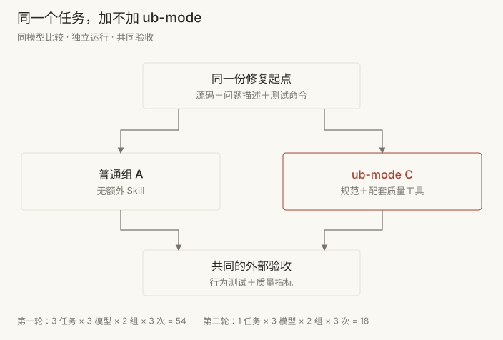
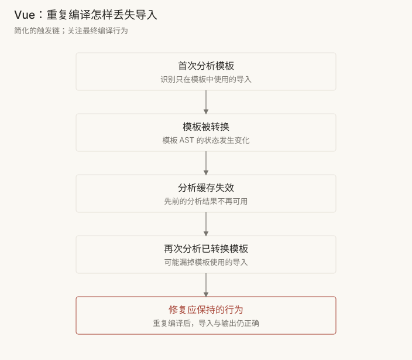
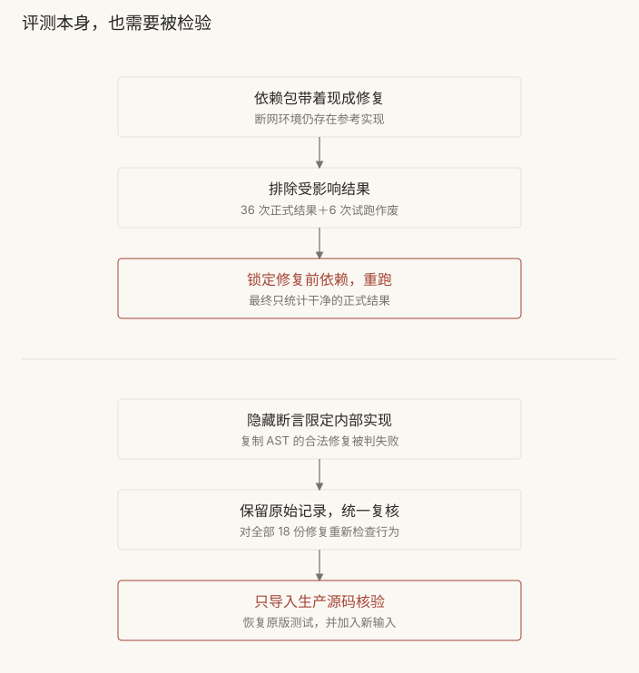
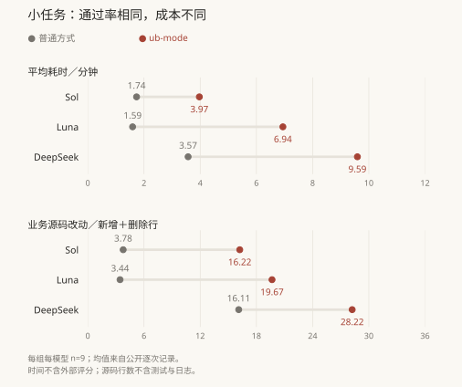
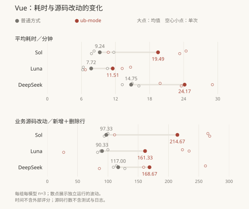
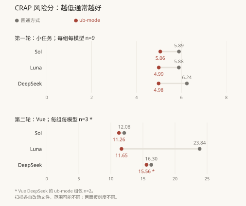
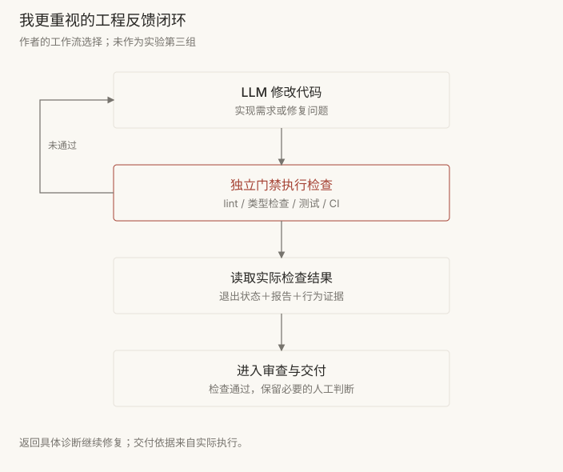

评测 Bob 大叔的 ub-mode：我为什么更重视工程门禁
这次刚好在 X 上看到 Bob 大叔发布了他的 ub-mode，于是就拿这个 Skill 做了一次评测，看看效果怎么样，值不值得用它改进我自己的工作流。
我的选择也先放在前面：这次之后，我不会在自己的工作流中使用这套模式。我更愿意把工程投入放在 lint、测试等 LLM 外部的门禁能力上。下面是这次实验的结果，以及它如何影响了这个选择。
1. ub-mode 是什么
ub-mode 是 Bob 大叔给编码 Agent 写的一份 Skill，主要内容是一组工程规范和工作流程。它把工程实践组织成三个阶段：先让功能工作，再整理实现，最后遵守日常实践。[1]
具体要求包括先写失败测试、修复根因、保持小步修改、用测试保护重构，以及记录过程和小步提交。它还要求借助质量工具检查代码复杂度、测试覆盖和重复代码等问题。
这份 Skill 告诉 Agent 应当怎样工作。实际的工程门禁则由 lint、测试等工具执行，根据检查结果决定能否交付。这次想测的是：给同一个 Agent 加上 ub-mode 和它要求的工具，最终修复能否获得额外收益，以及需要付出多少时间和改动。
2. 怎么测
2.1 对照方式
实验在 10 月 29 日进行，分成普通组 A 和 ub-mode 组 C。A 组拿到修复前源码、问题描述和测试命令，不加载额外 Skill；C 组拿到相同任务，额外加载 ub-mode，并提供配套质量工具。修复结束后，两组接受相同的外部验收与评分。[2]

模型使用 GPT-6.1-Sol、GPT-5.6-Luna、DeepSeek-V4.1-Flash。每个任务、模型和做法都独立重做三次。报告里的 seed 只是重复编号，没有设置模型服务的随机数种子。
比较只在同一模型内部进行。GPT 和 DeepSeek 的模型运行环境（harness）、推理配置与工具模式存在差异，这次不据此给模型排名。A/C 比较的是 Skill 与可用工具的组合效果，不能单独分出哪条规范或哪个工具贡献了多少。
主要观察四类结果：公开与隐藏验收是否通过、模型与工具阶段耗时、业务源码改动规模，以及复杂度、测试覆盖和重复代码等自动指标。耗时不含修复后的外部评分；源码改动按新增行＋删除行计算，不含测试和日志，也不是净增行数。
2.2 小实验：三个真实 bug，54 次修复
先选了三个 TypeScript 项目的真实 bug：ufo 移除 URL 前缀后对多余斜杠的处理，defu 合并默认配置时的原型污染，以及 pathe 丢失 UNC 网络共享根的问题。任务要求解决目标问题，同时保留相关边界行为。
3 个任务 × 3 个模型 × 2 种做法 × 3 次重复，共 54 次正式修复。每组每模型有 9 次运行，A/C 各 27 次。先前的试跑没有混入正式结果。
2.3 大实验：Vue 编译修复，18 次修复
接着换成 Vue core 的 PR #15136。问题发生在重复编译单文件组件时：模板已经被转换，之后分析缓存失效，再次分析这个组件，可能丢掉仅在模板里使用的导入。[3]

这项修复需要处理编译流程中多个模块的配合。官方参考修复涉及四个模块、134 行业务源码改动。1 个任务 × 3 个模型 × 2 种做法 × 3 次重复，另做 18 次正式修复，A/C 各 9 次，与小实验分开统计。
2.4 隔离与独立验收
每次从独立环境开始，去掉 Git 历史等线索，任务工具在隔离容器内执行，隐藏验收留在评分侧。运行时隔离限制了查找参考答案的路径，但不能证明模型在训练时没见过这些开源修复。
实验过程中发现了两个需要修正的问题。前期安装的 ufo、defu 发布包已经包含目标修复，六次正式运行确实读取过发布实现。两个受影响任务的 36 次正式结果和 6 次试跑被排除，锁定修复前依赖后重跑；另一个任务的 18 次有效结果保留。本文只使用最终干净的 54 次小实验结果。[2]
Vue 的原始隐藏验收还曾将 Luna 的一份修复判为失败：它通过复制 AST 避免修改原 AST，测试却要求输入 AST 必须被标记为 transformed。这条断言限定了内部实现，超出了重复编译后导入和输出正确的业务要求。
后续保留原始失败记录，对全部 18 份修复统一做行为复核。进一步从干净旧版本恢复原版测试和配置，只导入模型的生产源码，丢弃模型改过的测试和辅助文件，再加入修复完成后生成新标识符的客户端与 SSR 用例。

3. 测试结果
3.1 小实验：两组全部通过，耗时和改动增加
普通组和 ub-mode 组各 27 次，公开测试、隐藏验收都全部通过。这里的 27 是修复运行次数，不是测试用例条数。在这组任务上，普通方式已经达到验收上限，没有观察到 ub-mode 的成功率增益。[2]

| 模型 | 平均耗时／分钟 | 平均源码改动／行 |
|---|---|---|
| Sol | 1.74 → 3.97 | 3.78 → 16.22 |
| Luna | 1.59 → 6.94 | 3.44 → 19.67 |
| DeepSeek | 3.57 → 9.59 | 16.11 → 28.22 |
三个模型的 ub-mode 组每次平均多花约 2.23～6.02 分钟，也改了更多业务源码。额外改动可能来自必要整理，也会扩大审查范围；改动行数描述规模，不能直接等同于代码更差。
3.2 大实验：独立业务验收全部通过，额外成本仍然存在
Vue 的最终独立业务验收中，普通组和 ub-mode 组各 9/9 通过。下面用未修复版本和官方修复作对照，验证新增用例确实能识别目标问题。[3]
| 被验收的代码 | 原有 469 项测试 | 新增 2 条行为用例 |
|---|---|---|
| 未修复旧版本 | 全部通过 | 全部失败 |
| 官方参考修复 | 全部通过 | 全部通过 |
| 18 份模型修复 | 每份均通过 | 每份均通过 |

| 模型 | 平均耗时／分钟 | 平均源码改动／行 |
|---|---|---|
| Sol | 9.24 → 19.49 | 97.33 → 214.67 |
| Luna | 7.72 → 11.51 | 90.33 → 161.33 |
| DeepSeek | 14.75 → 24.17 | 117.00 → 168.67 |
三个模型的 ub-mode 组平均多花 3.79～10.26 分钟，源码改动增加约 44%～121%。组内波动很明显，例如 Luna 的 ub-mode 组三次分别改了 27、234、223 行。均值描述本轮整体变化，不能代表每次都会得到相近结果。
3.3 风险指标有所改善
两轮里，三个模型各自的 CRAP 平均风险分都有改善。CRAP 结合函数复杂度和测试覆盖计算，数值越低通常越好。它反映复杂代码缺少测试保护的风险，不是实际 bug 数，也不能换算成未来出故障的概率。

| 模型 | 平均风险分 | 文件内最高风险分的均值 |
|---|---|---|
| Sol | 12.08 → 11.26 | 46.67 → 56.00 |
| Luna | 23.84 → 11.65 | 186.90 → 42.00 |
| DeepSeek | 16.30 → 15.56 | 123.78 → 157.68 |
这里先计算每次改动文件内函数的平均风险分，再对运行取平均。A/C 可能改了不同文件，是否将某个原有大型函数纳入扫描，就会影响结果。Vue 的最高风险分并非一致改善，DeepSeek 的 ub-mode 组还缺一次有效测量，其余各组为三次。因此，我会把它记作风险指标的正向信号，对整体可维护性的判断还需要更多证据。
重复代码对在两轮两组中都为零，没有提供区分度。
过程审计确认 C 组读过完整 Skill，但这不意味着每条规范都被执行。提交记录没有充分证据证明稳定遵守了“首个提交是失败测试”，也无法判断未提交的编辑过程是否先写了测试。
4. 这些结果如何影响我的工作流
这轮四个任务里，两种方式最终都完成了目标验收。ub-mode 的 CRAP 平均风险分有所改善，额外耗时与更多源码改动则在两轮、三个模型里都出现了。对我而言，这些收益还不足以说服我在自己的工作流中使用这套模式。

我会优先把 lint、类型检查、测试和 CI 这些 LLM 外部的门禁能力搭好。能静态检查的规范写进 lint 和类型检查，业务行为和边界条件落成测试，修复后在独立流程中执行检查，保留输出与退出状态。Agent 可以调用工具、根据具体诊断继续修复，交付依据则来自实际检查结果和必要的人工审查。
资料与复现入口
- ub-mode 固定版规则，本轮使用版本
57a8bdd。 - 小任务完整报告与 54 次逐次结果。
- Vue 详细报告与 18 次逐次结果。
- Vue 生产源码独立复核脚本与运行说明。
- 本文图表使用的公开逐次数据，从上述固定版本报告整理；Vue 表中数值已四舍五入。
评论
评论由 GitHub Discussions 提供。